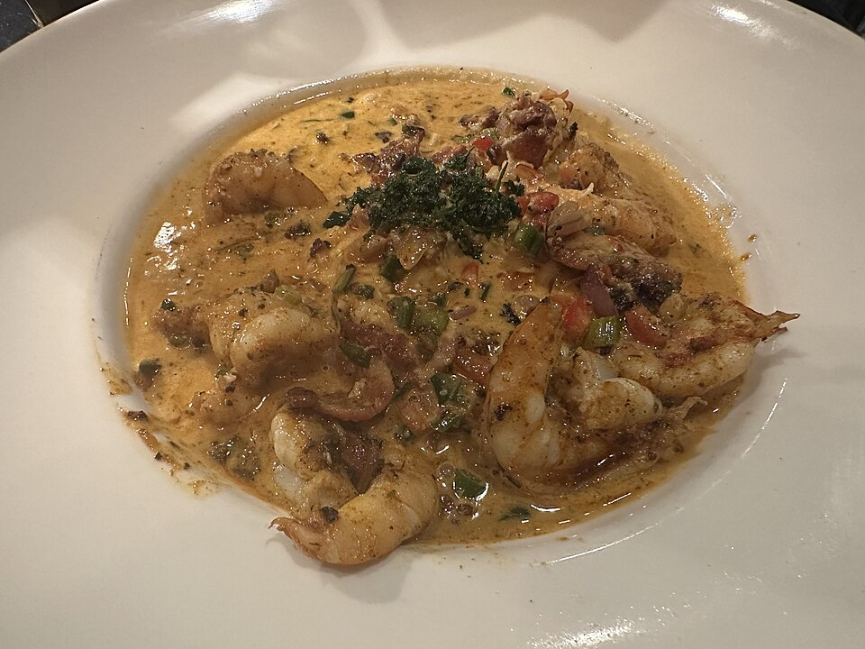

Seafood Watch Alignment
We follow strict seafood sustainability guidelines, refusing to purchase from overfished stocks or operations that damage ocean benthic habitats. Every catch on our board is fully traceable.
Beyond our oyster bar, Sea Level NC's hot kitchen celebrates the culinary traditions of coastal North Carolina and New England. We build direct relationships with certified sustainable fisheries, cook exclusively with non-threatened Atlantic species, and pair our catches with heirloom Carolina grains and scratch reductions.

Transparency, regional heritage, and deep culinary respect for marine ecosystems.
We follow strict seafood sustainability guidelines, refusing to purchase from overfished stocks or operations that damage ocean benthic habitats. Every catch on our board is fully traceable.
Our grits are stone-ground from non-GMO Carolina corn by local heritage millers. Slowly cooked with sweet cream, butter, and stock, they create the rich foundation for our shrimp skillet.
We simmer shrimp and crab shells into golden stocks, blending them with charred scallions, garlic, and smoky andouille sausage drippings to create our signature pan gravies from scratch.

Our lobster program relies on trusted cold-water trap fishermen in Maine. Fresh lobsters are steamed, picked, and flown down to Charlotte several times a week. We serve generous four-ounce portions of pure knuckle and claw meat on every toasted split-top brioche bun.
Explore Lobster Rolls →